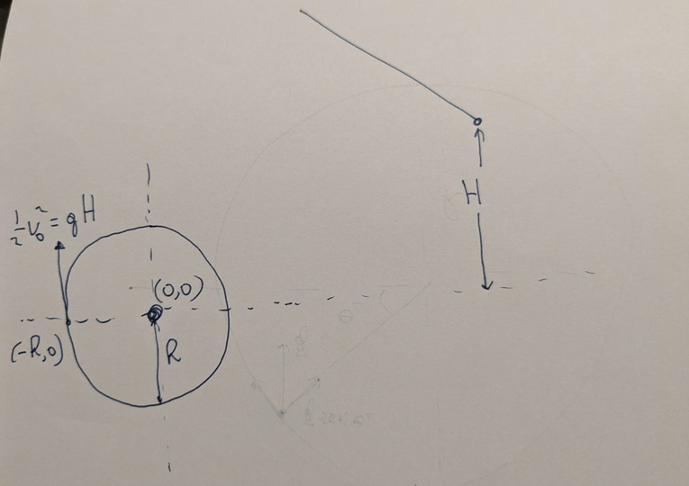

Modelo matemático para o Pêndulo Interrompido#
Vamos analisar um modelo matemático para descrever a trajetória de uma massa num loop ou para um pêndulo interrompido. Vamos admitir que, dependendo da velocidade inicial e energia cinética na parte mais baixo do círculo, a trajetória pode
ser parcialmente circular e periódica: a velocidade inicial não é suficiente para subir mais do que um raio do círculo;
ser inicialmente circular, mas a partir de uma certa altura ou ângulo crítico a massa se “desprende” da trajetória circular, a força normal ou da tensão é zerada e a massa segue em queda livre;
ser completamente circular: a velocidade incicial é suficiente para completar o círculo.
Durante a parte circular da trajetória circular há forças de vínculo (a força normal e a tensão no fio para o loop e pêndulo respectivamente) fornecendo parte da força centrípeta. Em ambos os casos há a força da gravidade, com componentes perpendicular (fornecendo uma parte da força centrípeta) e tangencial. Há, obviamente, também forças de atrito e graus de liberdade (rotação da massa, movimento do fio) que não vamos considerar inicialmente.
{kind=link}
Nossa referência é o centro do círculo (0,0). Vamos chamar o raio do círculo \(h\) e soltamos a massa \(m\) de uma altura \(H\). Em nosso referencial, se o ponto mais baixo da trajetória é \(-h\) e se a gente solta a massa de \(H \leq 0\), estamos na situação 1 acima, a de movimento periódico. Se \(H \geq 0\), a velocidade \(v_0\) em \((-h,0)\) é dado por
A equação (1) assume que soltamos a massa com velocidade zero.
Condição para justamente completar o círculo#
É instrutivo começar com o caso em que a massa atinge justamente a altura \(h\) (o terceiro caso das três possibilidades descritas acima). Qual é a altura que precisamos solter a massa para isso acontecer? Parece o tipo de problema onde é suficiente usar considerações de conservação de energia mecânica. Uma análise ingênua, de um iniciante, poderia concluir que precisamos soltar a massa de \(H=h\). Afinal, meste caso, a energia potencial inicial \(mgH\) é convertida totalmente para a energia potencial final \(mgh\). A massa não “quer” chegar na mesma altura de onde partiu?
Esse raciocício ignora o fato que a velocidade da massa no topo da trajetória (vamos chamar de \(v_t\)) não pode ser zero. Para nosso modelo, a força de vínculo (a força normal ou a tensão no fio) pode ser zero no topo da trajetória mas para continuar em movimento circular deve haver uma a força centrípeta, dado somente pela gravidade, resultando numa velocidade mínima no topo
Combinando com a conservação de energia mecânica
e temos que
Ou seja, precisamos soltar a massa de uma altura um pouco mais do que \(h\) para justamente chegar na altura \(h\) no topo da trajetória, porque no nosso modelo no topo há uma aceleração centrípeta mínima (quando a força normal ou de tensão no fio são zero), dado pela aceleração da gravidade \(g\).
Condição para justamente passar pelo centro do círculo#
Se soltar a massa de uma altura \(0 < H < \frac{3}{2}h \) em algum momento antes de chegar no topo a magnitude da força de vínculo se torna zero e a massa segue em queda livre. Começando com velocidade inicial \(v_0\) em \((-h,0)\), perguntamos para qual ângulo \(\theta_c\) a força de vínculo (a tensão ou força normal) se torna zero.
{kind=link}
{kind=link}
No momento crítico em que a força de vínculo é zero, a força centrípeta é dado (somente) pela componente perpendicular da força gravitação e temos
Por outro lado, pela conservação de energia mecânica
Combinando (2) e (3), e usando \(H_c\) (para a “altura de soltura crítica”) em (1), temos
Agora vamos escrever as equações horárias para a parábola de queda livre \(x(t)\) e \(y(t)\) com a posição inicial \((-h\cos{\theta_c},h\sin{\theta_c})\) e velocidade inicial \(\vec{v_c}\):
Para que essa parábola passa pelo \((0,0)\) podemos mostrar que precisamos ter \(\sin{\theta_c} = \sqrt{1/3}\) (ou \(\theta_c = 35.3^{\circ}\)). Inserindo isso em (4) chegamos a
Ou seja, precisamos soltar a massa de uma altura de \(0.866\) do raio para que a parábola exatamente passa pelo orígem do círculo. Um pouco mais, e o fio se enrola em volta do pino no caso de um pêndulo interrompido. Note que essa altura de soltura é um pouco menos do que o Galileu afirmou (ele disse que seria necessário usar uma altura \(h\) ou exato um raio).
Para terminar, vamos mostrar que \(\sin{\theta_c} = \sqrt{1/3}\). Certamente deve de ter uma maneira geométrica, pelas propriedades de círculos e parábolas de mostrar isso. Mas fiz por força bruta, colocando \(x=0, y=0\) nas equações horárias do parábola. Usando \(x(t_0) = 0\) temos
Inserindo este tempo em \(y(t_0) = 0\) temos
Pulando alguns passos e usando \(v_{c}^2 = hg\sin{\theta_c}\) chegamos a
o que mostra que \(\sin{\theta_c} = \sqrt{1/3}\) (e \(\cos{\theta_c} = \sqrt{2/3}\)).